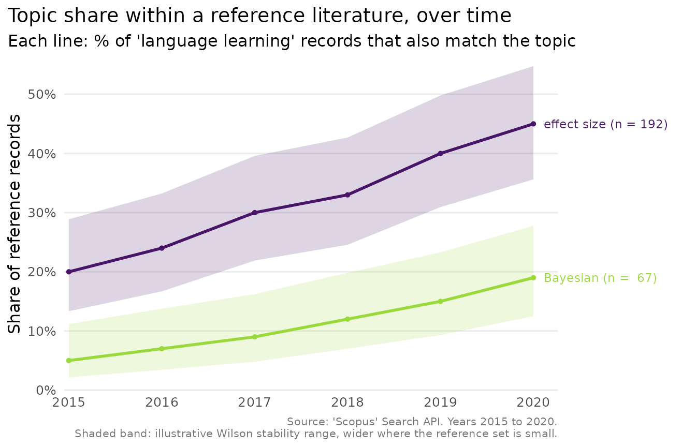

This vignette is fully reproducible without a Scopus API key. It draws on a small static fixture bundled with the package, so the whole workflow can be shown offline. The few steps that genuinely need the API are shown but not run.
Describing a search as a plan
A plan separates describing a search from executing it. Plans are
inspectable, saveable and version-controllable, and they can be
partitioned, for example by year, so that a large retrieval stays under
the API’s start < 5000 ceiling and can be cached and
resumed.
plan <- scopus_plan(
"machine translation",
years = 2018:2020,
field = "TITLE-ABS-KEY",
partition = "year"
)
plan
#> <scopus_plan> (3 cells, view "STANDARD", partition "year")
#> # A tibble: 3 × 6
#> cell query date year view page_size
#> * <int> <chr> <chr> <int> <chr> <int>
#> 1 1 TITLE-ABS-KEY(machine translation) 2018 2018 STANDARD 200
#> 2 2 TITLE-ABS-KEY(machine translation) 2019 2019 STANDARD 200
#> 3 3 TITLE-ABS-KEY(machine translation) 2020 2020 STANDARD 200Each row is one query cell. Field tags wrap the query and years become a date filter:
scopus_plan("language learning", field = "TITLE")$query
#> [1] "TITLE(language learning)"
scopus_plan("x", years = 2015:2020)$date
#> [1] "2015-2020"Sizing and fetching
With a key configured, you size a search cheaply and then execute the plan, optionally caching each cell so that an interrupted run resumes without re-spending quota. These contact the API, so they are not evaluated here:
scopus_count("machine translation", years = 2018:2020, field = "TITLE-ABS-KEY")
records <- scopus_fetch_plan(plan, cache_dir = scopus_cache_dir(), resume = TRUE)The record schema
Whether records come from the API or from the bundled example data, they share one stable schema. The package ships a small, already normalised set, which we use here to continue offline:
records <- example_records
records
#> <scopus_records> 6 records
#> query: "illustrative multi-disciplinary sample"
#> # A tibble: 6 × 9
#> entry_number scopus_id doi title authors year date publication citations
#> <int> <chr> <chr> <chr> <chr> <int> <chr> <chr> <int>
#> 1 1 85000000001 10.1… Geno… Zhang … 2019 2019… Nature 540
#> 2 2 85000000002 10.1… Deep… Kumar … 2020 2020… Nature 210
#> 3 3 85000000003 10.1… Clim… Okafor… 2018 2018… Nature Cli… 122
#> 4 4 85000000004 10.1… Grap… Tanaka… 2021 2021… Advanced M… 45
#> 5 5 85000000005 10.1… Chec… Garcia… 2020 2020… The Lancet… 388
#> 6 6 85000000006 10.1… Obse… Abbott… 2016 2016… Physical R… 4200scopus_records() produces this same shape from a raw API
response, flattening the nested result into one row per record.
DOIs and change tracking
Extract a clean, deduplicated DOI list for import into a reference manager, and compare two retrievals to see exactly what changed:
dois <- scopus_extract_dois(records)
dois
#> [1] "10.1038/s41586-019-0001-1" "10.1038/s41586-020-0002-2"
#> [3] "10.1038/s41558-018-0085-1" "10.1002/adma.202100001"
#> [5] "10.1016/S1470-2045(20)30013-9" "10.1103/PhysRevLett.116.061102"
# Suppose a later retrieval added one DOI and dropped another.
later <- c(dois[-1], "10.1000/example.999")
scopus_diff_dois(old = dois, new = later)
#> <scopus_doi_diff> 1 added, 1 removed, 5 unchanged
#> # A tibble: 7 × 2
#> doi status
#> <chr> <fct>
#> 1 10.1000/example.999 added
#> 2 10.1038/s41586-019-0001-1 removed
#> 3 10.1002/adma.202100001 unchanged
#> 4 10.1016/S1470-2045(20)30013-9 unchanged
#> 5 10.1038/s41558-018-0085-1 unchanged
#> 6 10.1038/s41586-020-0002-2 unchanged
#> 7 10.1103/PhysRevLett.116.061102 unchangedYou can write the DOIs to a path you specify:
out <- file.path(tempdir(), "dois.csv")
scopus_extract_dois(records, file = out)
readLines(out)
#> [1] "\"doi\"" "\"10.1038/s41586-019-0001-1\""
#> [3] "\"10.1038/s41586-020-0002-2\"" "\"10.1038/s41558-018-0085-1\""
#> [5] "\"10.1002/adma.202100001\"" "\"10.1016/S1470-2045(20)30013-9\""
#> [7] "\"10.1103/PhysRevLett.116.061102\""Comparing topic trends
scopus_compare_topics() issues one count request per
term per year, so it needs the API. Its output has a fixed shape, which
we reproduce here to show the plot:
cmp <- scopus_compare_topics(
reference_query = "language learning",
comparison_terms = c("effect size", "Bayesian"),
years = 2015:2020,
field = "TITLE-ABS-KEY"
)
# A stand-in comparison object with the same columns scopus_compare_topics()
# returns, so the plotting step is reproducible offline.
cmp <- tibble::tibble(
query = "q",
query_type = rep(c("reference", "comparison", "comparison"), each = 6),
abridged_query = rep(c("language learning", "effect size", "Bayesian"), each = 6),
year = rep(2015:2020, 3),
n = c(rep(100, 6), 20, 24, 30, 33, 40, 45, 5, 7, 9, 12, 15, 19),
reference_n = rep(100, 18),
comparison_percentage = c(rep(100, 6), 20, 24, 30, 33, 40, 45, 5, 7, 9, 12, 15, 19),
average_comparison_percentage = rep(c(100, 32, 11.2), each = 6)
)
class(cmp) <- c("scopus_comparison", class(cmp))
cmp
#> <scopus_comparison> (3 topics)
#> # A tibble: 18 × 8
#> query query_type abridged_query year n reference_n comparison_percentage
#> <chr> <chr> <chr> <int> <dbl> <dbl> <dbl>
#> 1 q reference language lear… 2015 100 100 100
#> 2 q reference language lear… 2016 100 100 100
#> 3 q reference language lear… 2017 100 100 100
#> 4 q reference language lear… 2018 100 100 100
#> 5 q reference language lear… 2019 100 100 100
#> 6 q reference language lear… 2020 100 100 100
#> 7 q comparison effect size 2015 20 100 20
#> 8 q comparison effect size 2016 24 100 24
#> 9 q comparison effect size 2017 30 100 30
#> 10 q comparison effect size 2018 33 100 33
#> 11 q comparison effect size 2019 40 100 40
#> 12 q comparison effect size 2020 45 100 45
#> 13 q comparison Bayesian 2015 5 100 5
#> 14 q comparison Bayesian 2016 7 100 7
#> 15 q comparison Bayesian 2017 9 100 9
#> 16 q comparison Bayesian 2018 12 100 12
#> 17 q comparison Bayesian 2019 15 100 15
#> 18 q comparison Bayesian 2020 19 100 19
#> # ℹ 1 more variable: average_comparison_percentage <dbl>
if (requireNamespace("ggplot2", quietly = TRUE)) {
plot_scopus_comparison(cmp)
}
Export and interoperability
Hand results to bibliometrix-style workflows, or save
and reload them:
head(as_bibliometrix(records))
#> AU TI
#> 1 ZHANG F. GENOME EDITING WITH CRISPR-CAS9: PRINCIPLES AND APPLICATIONS
#> 2 KUMAR S. DEEP LEARNING FOR MEDICAL IMAGE ANALYSIS: A REVIEW
#> 3 OKAFOR N. CLIMATE CHANGE ADAPTATION IN COASTAL MEGACITIES
#> 4 TANAKA H. GRAPHENE ELECTRODES FOR NEXT-GENERATION ENERGY STORAGE
#> 5 GARCIA M. CHECKPOINT INHIBITORS IN CANCER IMMUNOTHERAPY
#> 6 ABBOTT B. OBSERVATION OF GRAVITATIONAL WAVES FROM A BINARY BLACK HOLE MERGER
#> SO DI PY TC UT
#> 1 NATURE 10.1038/s41586-019-0001-1 2019 540 85000000001
#> 2 NATURE 10.1038/s41586-020-0002-2 2020 210 85000000002
#> 3 NATURE CLIMATE CHANGE 10.1038/s41558-018-0085-1 2018 122 85000000003
#> 4 ADVANCED MATERIALS 10.1002/adma.202100001 2021 45 85000000004
#> 5 THE LANCET ONCOLOGY 10.1016/S1470-2045(20)30013-9 2020 388 85000000005
#> 6 PHYSICAL REVIEW LETTERS 10.1103/PhysRevLett.116.061102 2016 4200 85000000006
#> DB
#> 1 SCOPUS
#> 2 SCOPUS
#> 3 SCOPUS
#> 4 SCOPUS
#> 5 SCOPUS
#> 6 SCOPUS
path <- file.path(tempdir(), "records.rds")
write_scopus_records(records, path)
identical(read_scopus_records(path), records)
#> [1] TRUEHandling failures
Network and API problems surface as typed conditions, all inheriting
from scopus_error, so a workflow can respond to them in
code:
tryCatch(
scopus_fetch("..."),
scopus_error_no_key = function(e) message("No API key configured."),
scopus_error_rate_limit = function(e) message("Rate limited, so backing off."),
scopus_error = function(e) message("Scopus error: ", conditionMessage(e))
)